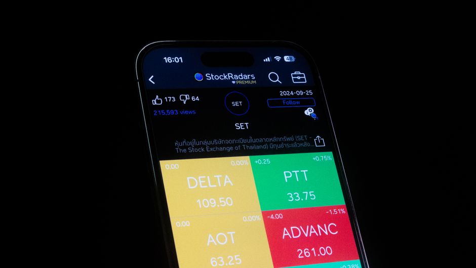

The Stationarity Assumption Hiding Inside Your Metrics
Most evaluation metrics quietly assume the world stays put between training and deployment. Here is what that assumption buys you, and what happens when it fails.

The quiet assumption nobody states
When we compute accuracy, precision, recall, AUC or any other standard metric on a held-out test set, we are implicitly claiming something much stronger than 'this model did well on these examples'. We are claiming that the process generating the test set is the same process that will generate future data. In statistical terms, we are assuming the data is stationary: the joint distribution of inputs and outputs does not change over time. Without that assumption, a single number computed on a fixed test set tells you almost nothing about what will happen next week.
This assumption is so deeply baked into machine learning practice that it rarely gets named. Train/test splits, cross-validation, even the very idea of a leaderboard, all rest on the belief that the past is a fair sample of the future. Most of the time this is a reasonable working assumption, and it is why the field has made progress at all. But it is worth being explicit about it, because the moment it breaks, your evaluation numbers stop measuring what you think they measure.
I find it useful to separate two things that often get conflated: the model's ability to fit patterns, and the metric's ability to certify that fit will generalise in time. A model can be excellent at the first and the metric can still lie to you about the second, purely because the world moved.
A worked example: the fraud detector that stopped working
Imagine a binary classifier trained to flag fraudulent transactions, evaluated by a leakage-aware time-based split: train on January to June, test on July. Suppose it achieves an AUC of 0.94 and, at the chosen threshold, a precision of 0.81 and recall of 0.76. Those numbers look solid, and because the split respects time order rather than shuffling randomly, we can be fairly confident they reflect genuine generalisation across that boundary, not memorisation leaking backwards from the future into training.
Now roll the model into production for August. A new fraud pattern emerges, say a coordinated attack using a payment method that barely existed in the training window. The feature distribution for that payment method shifts, and more importantly the relationship between features and the fraud label shifts too: transactions that used to be low risk with that method are now high risk. This is not just covariate shift, where inputs move but the underlying relationship stays fixed; it is a change in the conditional distribution itself, sometimes called concept drift.
Precision in August might fall to 0.52 while recall drops to 0.58, even though nothing about the model changed. The AUC computed back in July, 0.94, is still a true statement about July's population. It was never a promise about August. The mistake is not in the metric's arithmetic; it is in treating a single stationary-world snapshot as if it were a permanent certificate of quality.
What makes this insidious is that the same numeric value, 0.94 AUC, can represent two very different realities depending on whether the underlying process is stable or drifting. A practitioner who only checks the dashboard once a quarter can go months believing the model is fine, because the number they last saw was good and nobody told them the assumption underneath it had quietly expired.

Where stationarity is more fragile than it looks
Some domains are close enough to stationary that the assumption barely matters: image classification of static object categories, for instance, where a cat looks like a cat regardless of the decade. Other domains are almost never stationary, and evaluation practice has to account for that explicitly. Recommendation systems face shifting user tastes and seasonal effects. Any model touching human behaviour, pricing, or adversarial actors faces a moving target almost by definition, because people react to the model itself, which is a form of feedback loop that guarantees non-stationarity.
Random train/test splitting is particularly dangerous in non-stationary settings, because it hides the problem rather than revealing it. If you shuffle a year of transactions randomly instead of splitting by time, information from August leaks into training via near-duplicate records, seasonal correlations or entities that appear in both sets. The resulting metric looks even better than the time-based split, precisely because it violates the temporal structure of the real deployment scenario. This is a leakage problem dressed up as a stationarity problem: the test set stops being an honest proxy for the future the moment it is allowed to peek at it.
A more subtle version shows up in metrics aggregated over long periods. Reporting a single accuracy figure over eighteen months of deployment can average away a serious mid-period collapse and a later recovery, presenting a flat, reassuring number that never existed at any single point in time. Sliced, time-windowed evaluation, plotting the metric over rolling periods rather than collapsing it to one scalar, is the simplest defence, and it costs almost nothing extra to compute.
What to actually do about it
The practical fix is not a clever new metric; it is a change in evaluation discipline. Always split by time when time is meaningful, never by random shuffling, so your test performance reflects genuine forward prediction rather than interpolation within a static blob of data. Track metrics as a time series against deployment, not as a single frozen number from validation day, and set up monitoring that compares live performance against the training-time baseline rather than assuming it will hold indefinitely.
It also helps to distinguish, when performance drops, whether the inputs have shifted, the labels have shifted, or the relationship between them has shifted, because each calls for a different response: retraining on fresh data, recalibrating thresholds, or redesigning features entirely. None of this requires exotic statistics. It requires accepting that a metric is a statement about a particular slice of history, and treating any claim about the future as a hypothesis to be checked again, not a fact already proven.